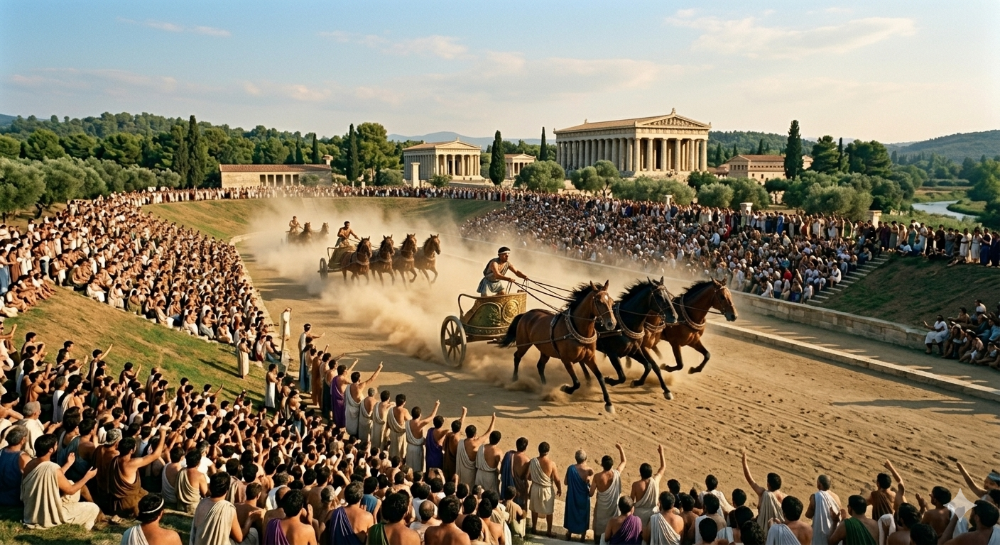

În cadrul Jocurilor Olimpice Antice existau mai multe tipuri de competiții sportive care puneau la încercare abilitățile fizice extreme ale sportivilor. Aceste probe nu erau doar simple exerciții, ci veritabile demonstrații de supraviețuire și virtuozitate, desfășurate sub privirile a mii de spectatori care umpleau băncile de pământ ale stadionului.
Alergarea, cea mai veche disciplină, cuprindea diverse distanțe: de la „stadion” (aproximativ 192 metri) până la „dolichos”, o cursă de rezistență ce atingea aproape 5 kilometri. O probă unică era „hoplitodromos”, unde atleții alergau purtând coiful, scutul și cnemidele din bronz, cântărind peste 20 de kilograme, pentru a simula condițiile reale de luptă pe câmpul de bătălie. Săritura în lungime era și ea neobișnuită față de standardele moderne, deoarece sportivii foloseau „halteres” — greutăți din piatră sau metal pe care le balansau în mâini pentru a-și mări impulsul și distanța zborului prin aer.
Sporturile de contact reprezentau punctul culminant al brutalității și al curajului. „Pankration” era probabil cea mai temută probă, fiind un amestec de box și lupte în care aproape orice lovitură era permisă, exceptând mușcatul și scoaterea ochilor. Luptătorii se ungeau cu ulei pentru a-și face pielea alunecoasă, făcând prizele extrem de dificile și testând agilitatea mentală la fel de mult ca pe cea musculară. În ciuda violenței, aceste probe erau guvernate de un respect profund, iar moartea unui adversar, deși rară, era considerată o tragedie care aducea uneori victoria postumă celui învins cu onoare.
Pentatlonul era considerat proba supremă a echilibrului fizic, premiind sportivul cel mai versatil. Cine câștiga pentatlonul era văzut ca fiind posesorul corpului perfect,